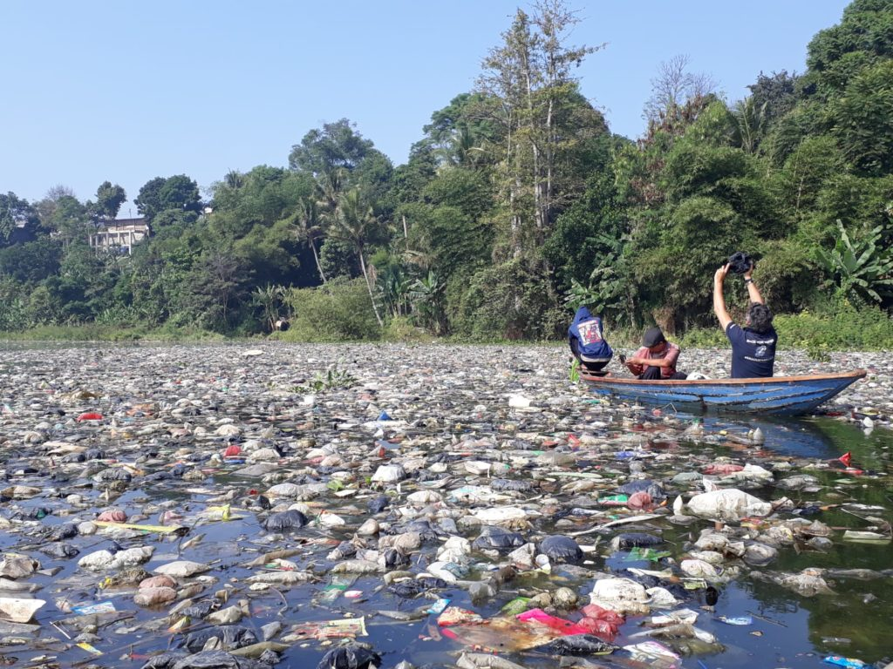

Река Читарум

Индонезия - островное государство, расположенное в юго-восточной Азии. На одном из крупных остров - на Ябе протекает река Читарум, играющая огромную роль в жизни островитян. Воды этой реки используются в сельском хозяйстве для водоснабжения. На сегодняшний день река является самым загрязненным водоёмом в мире. Мусор как ковер густо покрывает поверхность реки. На очистку реки были выделены колоссальные суммы, но это не помогло разгрести завалы отходов, в то время как мусор убирался из реки, в нее добавлялось вдвое больше.
Далее